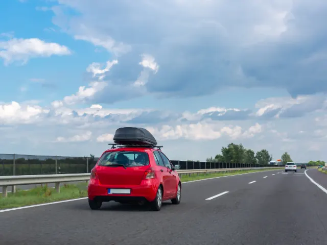
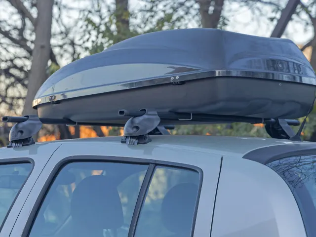

Partnerbijdrage
Alles wat u moet weten over veilig reizen met een dakkoffer
Gepubliceerd op 6 oktober 2024

Het installeren van een dakkoffer is een slimme en praktische manier om extra opslagruimte te creëren tijdens uw reis. Of het nu gaat om een vakantie, een kampeertrip of extra bagage, een dakkoffer stelt u in staat meer spullen mee te nemen zonder de binnenruimte van uw auto te beperken. Voordat u echter op pad gaat, is het belangrijk om te weten hoe u de dakkoffer veilig en correct kunt monteren. In dit artikel leest u alles wat u moet weten over de montage van de dakkoffer om ervoor te zorgen dat deze stevig op het dak van uw auto wordt bevestigd.
Kies de juiste dakkoffer voor uw auto
Wilt u binnenkort beginnen met het installeren van een dakkoffer? Dan moet u eerst degene kiezen die geschikt is voor uw auto. Er zijn verschillende soorten dakkoffers op de markt, dus het is belangrijk om er een te kiezen die bij de grootte van uw auto past. Controleer ook het maximale dakgewicht dat uw auto kan dragen, meestal staat dit in de gebruikershandleiding van uw auto. De keuze van de dakkoffer hangt ook af van wat u wilt vervoeren. Lange dakkoffers zijn ideaal voor ski’s of surfplanken, terwijl bredere dakkoffers geschikt zijn voor bagage zoals koffers en tassen. Alles over de montage van de dakkoffer voor de Nissan Qashqai leest u op de AUTODOC-website hier.
Parameter | Personenauto’s (gemiddelde waarde) | SUV’s (gemiddelde waarde) |
Maximale dakbelasting | 50-75 kg | 75-100 kg |
Toename van brandstofverbruik met dakkoffer | 9,85 | 4,9 |
Aanbevolen maximumsnelheid | 120 km/u | 110 km/u |

Installeer de juiste dakdragers
Een dakkoffer kan niet direct op het dak van de auto worden geplaatst. Voor de montage van de dakkoffer zijn dakdragers nodig. Deze dakdragers vormen de basis waaraan de dakkoffer wordt bevestigd. Niet alle auto’s hebben standaard dakdragers, dus u moet deze mogelijk apart aanschaffen en installeren. Zorg ervoor dat u dakdragers koopt die geschikt zijn voor uw auto en volg de installatie-instructies nauwkeurig. De dakdragers moeten stevig worden vastgemaakt en correct worden afgesteld voor een veilige montage van de dakkoffer.
Belangrijke stappen over de montage van de dakkoffer
Nadat u de dakdragers hebt geïnstalleerd, kunt u beginnen met de montage van de dakkoffer. Dit proces kan variëren afhankelijk van het merk en model van de dakkoffer, maar de meeste hebben een vergelijkbaar bevestigingssysteem. Begin met het plaatsen van de dakkoffer op de dakdragers en zorg ervoor dat deze goed is gecentreerd. De dakkoffer moet in het midden van de auto worden geplaatst om de stabiliteit tijdens het rijden te waarborgen. Bevestig vervolgens de klemmen of beugels van de dakkoffer aan de dakdragers. Draai de bevestigingen gelijkmatig aan, zodat de dakkoffer stevig vastzit, maar niet te strak, om schade te voorkomen.

Controleer de stabiliteit en gewichtsverdeling
Waar moet u aan denken bij de montage van de dakkoffer? Een belangrijk aspect is de gewichtsverdeling. De bagage in de dakkoffer moet gelijkmatig worden verdeeld om te voorkomen dat de auto zijn balans verliest tijdens het rijden. Plaats zware items zo dicht mogelijk bij het midden van de dakkoffer en lichtere items aan de zijkanten. Controleer na het monteren van de dakkoffer altijd of deze stevig vastzit door er voorzichtig aan te schudden. Als de dakkoffer beweegt, controleer dan de bevestigingen en draai deze indien nodig aan.
Houd rekening met snelheidsbeperkingen en rijgedrag
Rijden met een dakkoffer verandert het rijgedrag van uw auto, vooral op het gebied van aerodynamica en stabiliteit. U moet rekening houden met extra luchtweerstand, wat kan leiden tot een hoger brandstofverbruik en een ander rijgevoel. De meeste fabrikanten raden aan niet sneller dan 120 km/u te rijden met een beladen dakkoffer, omdat hogere snelheden de stabiliteit kunnen verminderen. Wees ook voorzichtig bij harde wind of in bochten, omdat de dakkoffer het zwaartepunt van uw auto verhoogt.
Opslag en onderhoud van uw dakkoffer
Na uw reis is het belangrijk om uw dakkoffer correct op te slaan en te onderhouden. Verwijder de dakkoffer als u deze niet vaak gebruikt om slijtage en extra brandstofverbruik te voorkomen. Reinig de dakkoffer met water en een mild reinigingsmiddel om vuil en stof te verwijderen en droog deze goed af voordat u deze opbergt. Bewaar de dakkoffer op een droge plaats, uit de buurt van direct zonlicht, om verkleuring en beschadiging door weersinvloeden te voorkomen.
Een dakkoffer biedt veel voordelen voor reizen en avonturen, maar het is van cruciaal belang om deze correct te installeren en te onderhouden voor de veiligheid van u en uw voertuig. Door aandacht te besteden aan de juiste gewichtsverdeling, snelheid en regelmatige controle van de bevestigingen, kunt u zorgeloos genieten van uw reis. Vergeet ook niet uw dakkoffer na gebruik op de juiste manier op te slaan om de levensduur ervan te verlengen.